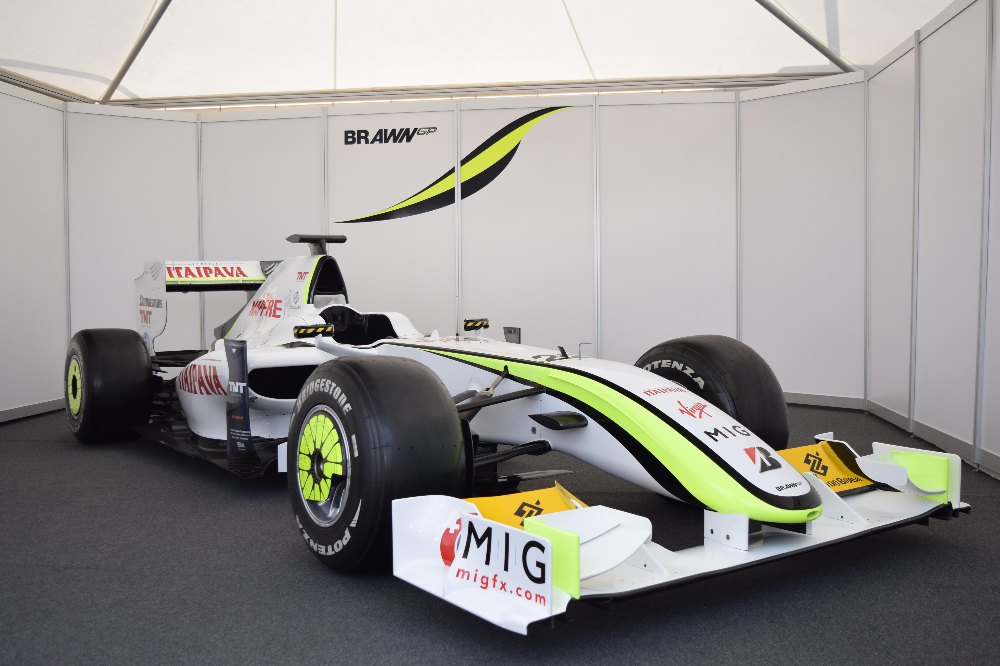
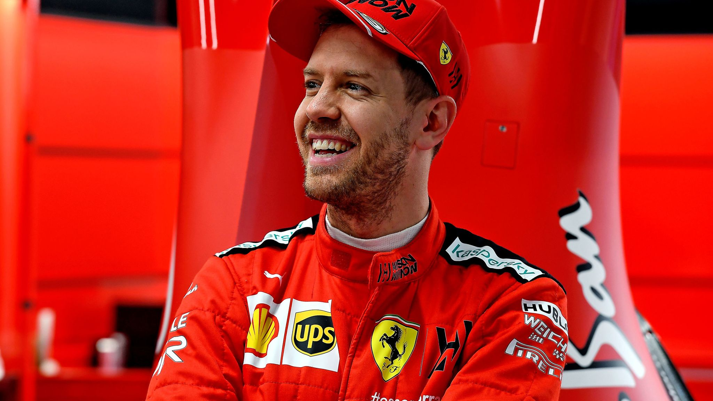

2000 - 2020
Brawn BGP 001

It was notable for its unusual "double" diffuser, and its legality was disputed though ultimately deemed legal by the FIA.
This is the first Brackley-based F1 car to utilize Mercedes-Benz engines, in which it is used by its successor as factory team. On BGP 001's debut at the 2009 Australian Grand Prix, Jenson Button took pole position in qualifying and finished first in the race while Rubens Barrichello took second place in both qualifying and race.
Honda Racing began development for their 2009 car early in the 2008 season. In December 2008, Honda announced their plans to withdraw from Formula One. Development of what would become the BGP 001 continued whilst a buyer was sought for the team. The team were purchased by Team Principal Ross Brawn, and the outfit renamed Brawn GP. It was designed by Loïc Bigois, in similar respects to all the other cars on the grid with a moulded carbon fibre and honeycomb composite monocoque and a front and rear wishbone and pushrod activated suspension system. Remarkably, it was revealed that the modifications made to the car to accommodate its Mercedes engine saw six inches removed from the rear end, severely compromising the car's center of gravity and by the time the team realized how much the car's balance had changed, there was no time to commission a new design. Ross Brawn also admitted that there were fundamental problems with the car, stating that it was too heavy, and that some of the parts were not good for the car.
Yet the car had one difference, which was focused on the rear so-called 'double-decker diffuser'. The diffuser is at the rear of the car and is a route to get downforce by using the airflow under the car's floor. The BGP 001 had a different central channel to its diffuser with the shape of the structure being used to create advanced type of double-decker design. The diffuser's controversial aspect was the hole in the rear which increases the speed of airflow as it heads towards the higher rear venturi section, where it expands and creates more downforce. Other teams argued that the presence of the hole is against the regulations.
At the first race of the season in Australia an official complaint was launched by Renault, Red Bull and Ferrari against the diffusers of the Williams FW31, Toyota TF109 and the BGP 001 saying that they were illegal. However the race stewards did not share that view and rejected the other teams' complaints. Subsequently, the car was cleared to race in Melbourne. The same problem was faced in Malaysia after BMW tried again but failed.
Over the controversy the 'non-diffuser' teams, Ferrari, BMW Sauber, Red Bull, lodged an official appeal against the design and the date was set for April 13, 2009 for the FIA International Court of appeal (ICA); putting the first two races under appeal meaning the cars' first two wins of the season with Button could have been removed. After discussing the legality of the diffusers throughout Tuesday a verdict was becoming clear. On Wednesday 14th the ICA concluded that the diffusers' designs were legal and complied with the 2009 regulations, rejecting the teams' appeal.
With the diffuser change, the new rules in place for the 2009 season required cars to have narrower and higher rear wings and wider and lower front wings, designed to reduce air disturbance for following cars and hence make overtaking easier.[12][13] Slick tyres were also re-introduced in the 2009 Formula One season, having been absent since 1998,[14] this said to increase tyre grip by about 20%.
Sebastian Vettel

Vettel started his Formula One career as a test driver for BMW Sauber in 2006 and made his racing debut with the team at the 2007 United States Grand Prix, replacing the injured Robert Kubica. Already part of the Red Bull programme, he joined Toro Rosso later in the season, and was kept as a driver for 2008. In his first full season in Formula One, he became the then-youngest pole-sitter and race winner at the 2008 Italian Grand Prix. Vettel was promoted to Red Bull for the 2009 season, and became the youngest driver in history to win the World Drivers' Championship in 2010. Three more titles in succession followed; Vettel won the 2010 and 2012 titles in the final round, while he dominated in 2011 and 2013. He left the team at the end of 2014 and signed with Ferrari. He then won three races in his first season at the team in 2015, finishing third in the championship.
Vettel was the closest challenger to the Mercedes driver Lewis Hamilton in 2017 and 2018 but finished both seasons as runner-up with five wins in both seasons. His contract with Ferrari was not extended beyond the end of 2020. He is signed to race for Aston Martin from 2021 replacing Sergio Pérez.